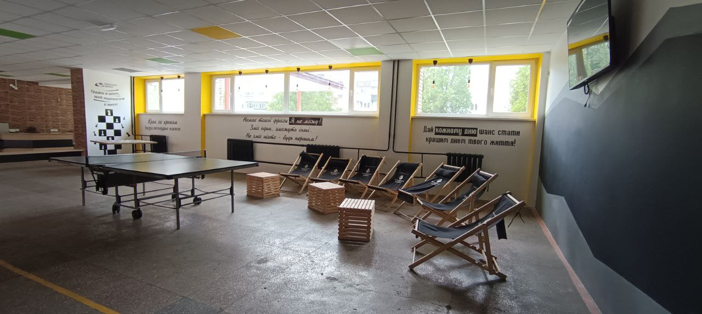
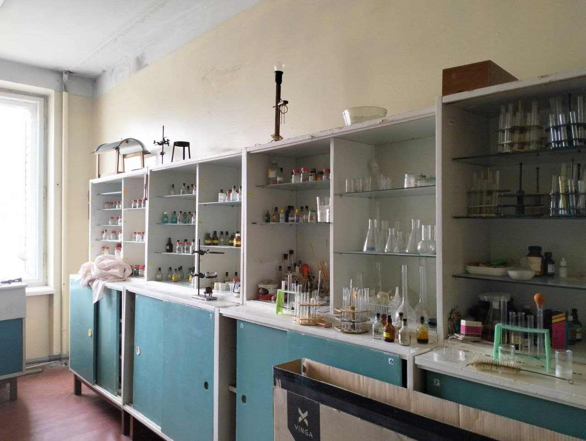
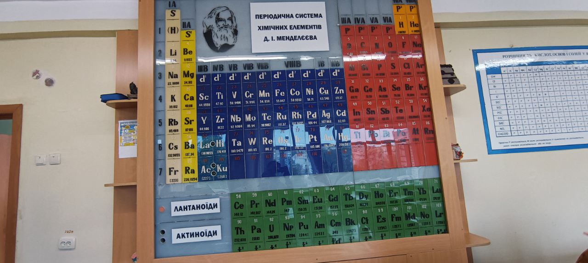
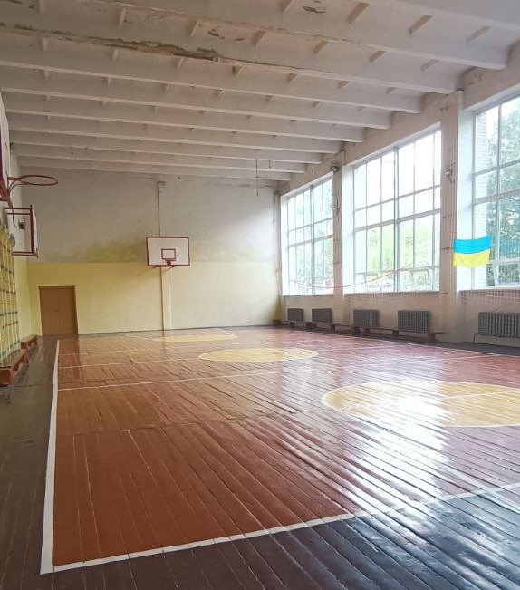
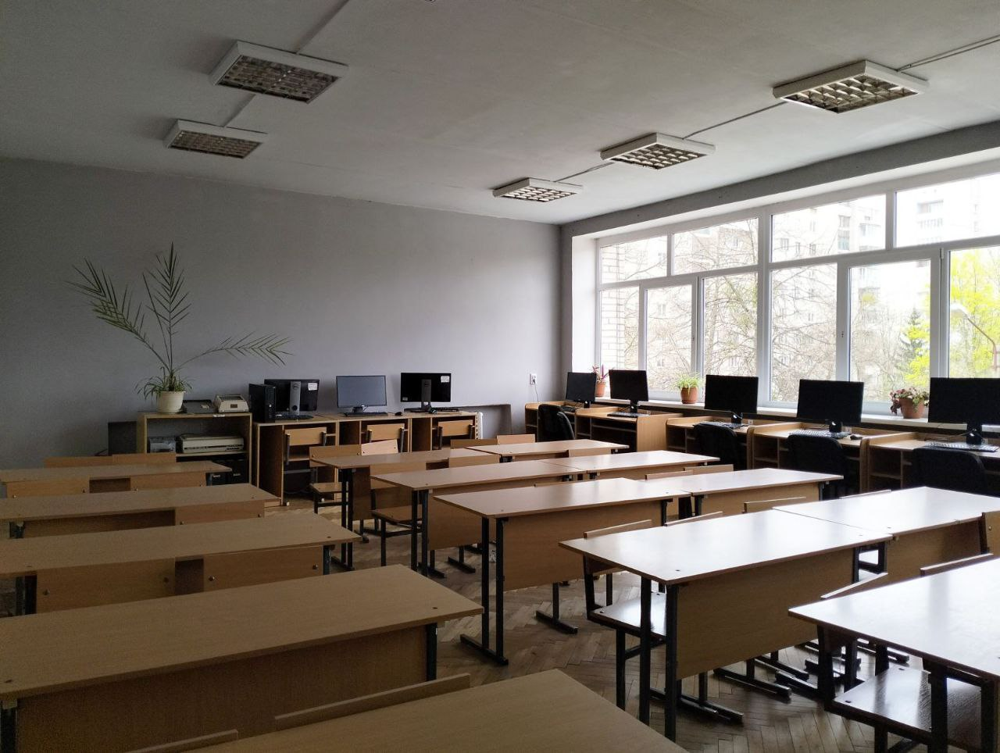
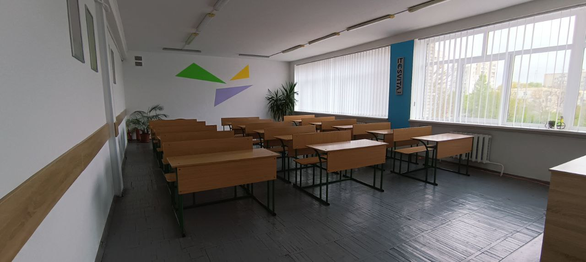
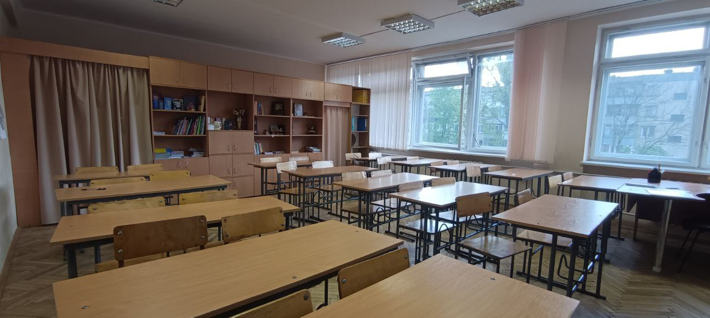
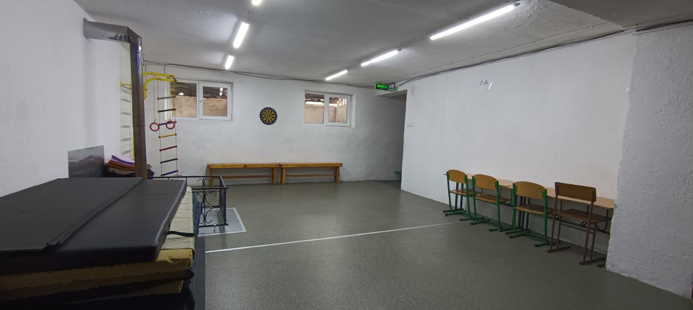

Як тільки ви зайшли ви можете побачити галицьку здобу де можете купити круасани, булочки, печеньки, чай, та каву з зручнтму стільцями і столами, з дуже цікавими цитатами на стінах
Якщо подивитися в інчий бік ви можете побачити тенісний стіл на якому 100% хтось буде грати в теніс а неподалік можна побачити дуже м'ягкі шислонги
Далі ми йдемо по коридорах з панорамними вікнами вони пропускають сонячні промінчики і дають енергію на весь день Коли ми прийшли потрібно переодягнутися і поставити взуття в наші красиві шафки
Потім після того як ми перезулися і переодягнулися ми заходимо в класс української літератури .зразу після того як ми ввійшли ми бачимо статую нашого прекрасного і відомого поета Тараса Григоровича Шевченка і красиву карту України на якій зображено кожну область України з її традиційним одягом
 
Далі по коридорам ми у ввійшли у клас хімії в якому зразу побачили таблицю Менделєєва і лабораторію в якій можливо проводили досліди або лабораторні роботи для учнів цієї прекрасної школи
Ми проходимо далі і бачимо шкільний спортзал але нам сказали він не основний і цей спортзал використовується в зиму або на кінці осені а коли вже весна або стає тепліше школярі ідуть на поле яке знаходиться у дворі
Біля нього знаходиться класс біології в якому учні вчать хвороби і віруси щоб їх здолати також в ньому вчать першої медичної допомоги та як це правильно робити і куда тиснути
Ми піднімаємось на 3 поверх і заходимо в класс інформатики в якому є дуже сучасні комп'ютери і монітори щоб вчитися програмувати і вчити коди для програмування в ньому також знаходиться телевізор щоб вчитель або вчителька показували сайти і проекти.

Ми йдемо далі і заходимо в сучасний класс фізики в якому є сучасні парти і стільці також в ньому є мультиборд щоб учням було легче і цікавіше вчитися і спостерігати що сьогодні за тема
Після класу української мови ми заходимо в клас зарубіжної літератури і бачимо кілька стародавніх поетів і їхні твори
Також на перервах діти виходять у шкільний дворик щоб пограти в волейбол або футбол з своїми однокласниками а також можна пограти у пінпонг і шахмати які знаходяться у холі біля кафе.
Також якщо в Львові є повітряна тривога учні можуть пройти в бомбо сховище щоб бути в безпеці також щоб їм було комфортно і не нудно там розташовані матраци і різноманітні настільні ігри.
